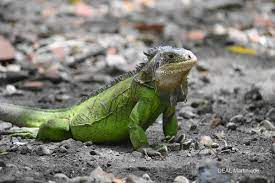

La Martinique en quelques mots
MadaGuide a collecté pour vous quelques informations clés sur l'île aux fleurs, la perle des Caraïbes.
MadaGuide vous propose donc de découvrir :
Sa Monnaie
La Martinique, étant un département d'Outre-Mer rattaché à la France, elle utilise l'euro (€) comme monnaie.
Son Fuseau horaire
La Martinique a un fuseau horaire de GMT-4.
Sa Géographie
La Martinique a une superficie de 1060 km².
Elle mesure 80 km dans sa plus grande longueur et 39 km dans sa plus grande largeur. Au nord de l'île, La Montagne Pelée en est le point culminant (1.397 m).
en est le point culminant (1.397 m).
Forêts denses, rivières et cascades caractérisent le Nord et feront le bonheur des randonneurs.
Le centre plus industrialisé sera lui le paradis de collectionneurs de souvenirs et d'artisanat local.
Au sud, de magnifiques plages et des décors de cartes postales attendent les amoureux de farniente.
Sa Culture
La population de la Martinique est « métissée ». Cette diversité résulte du métissage issu du mode de peuplement de l'île, en relation avec l'Histoire et la colonisation : amérindiens, européens, africains, indiens, levantins et asiatiques. Environ un quart de la population vit dans le chef-lieu, Fort-de- France.
La langue officielle est le français, mais tous les martiniquais parlent le créole, issu de la rencontre entre le vieux français, l'anglais, les dialectes africains et de la survivance de termes amérindiens.
Son héritage d'artisanat, sa littérature riche d'écrivains de renom et de grands poètes, la musique et la danse, l'art de vivre et la gastronomie font de la Martinique une terre de tradition et de culture.
En Martinique, les confessions religieuses sont très nombreuses, mais le catholicisme domine.
Chaque année, en Martinique, il y a plusieurs évènements importants qui font parties de la culture Martiniquaise comme le Tour des Yoles ou le Carnaval de la Martinique.
Son Climat
Dotée d’un climat tropical, la Martinique connait deux saisons : la saison sèche ensoleillée aux températures douces comprises entre 23°C et 25°C et la saison humide avec des températures plus élevées.
Venues de l'est et du nord-est, des brises régulières, les alizés, rafraîchissent l'atmosphère en permanence.
Sa faune et sa flore
Cette île tropicale, est couverte de somptueuses forêts tropicales, savanes, de fruits exotiques, et de fleurs, sans oublier les palétuviers de la mangrove. L'ensemble fait de l'île un extraordinaire jardin exotique.
La faune, essentiellement composée d'oiseaux, de poissons et de crustacés, s'enrichit également de petits lézards, les « mabouyas » et les « anolis », d'iguanes et de serpents trigonocéphales spécifiques à la Martinique. Le « manicou » (sarigue) est un petit mammifère endémique de l'ordre des marsupiaux. La mangouste
spécifiques à la Martinique. Le « manicou » (sarigue) est un petit mammifère endémique de l'ordre des marsupiaux. La mangouste , en revanche, a été introduite par l'homme pour combattre les serpents.
, en revanche, a été introduite par l'homme pour combattre les serpents.